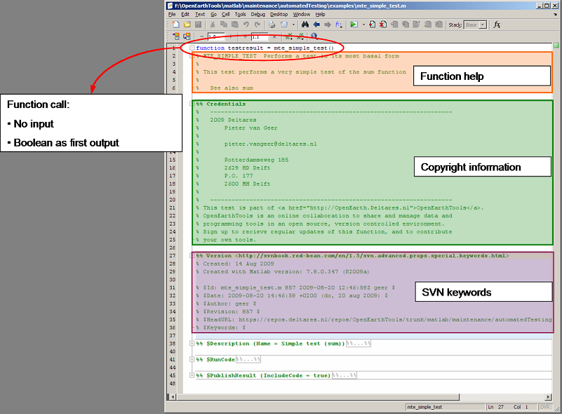
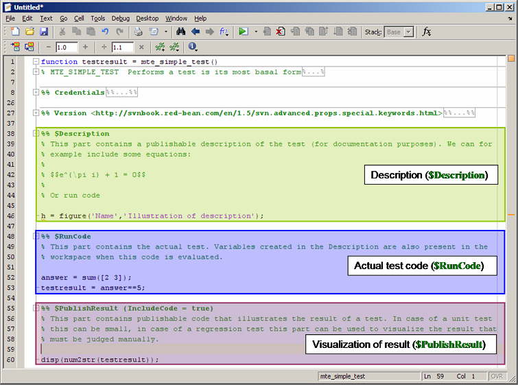
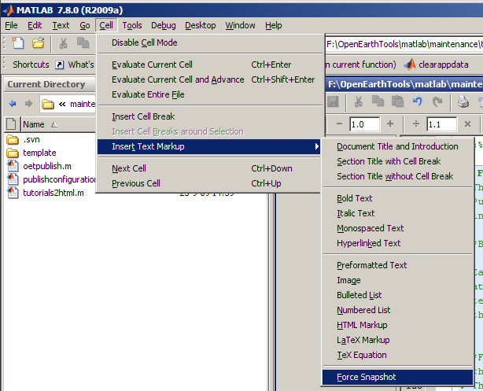
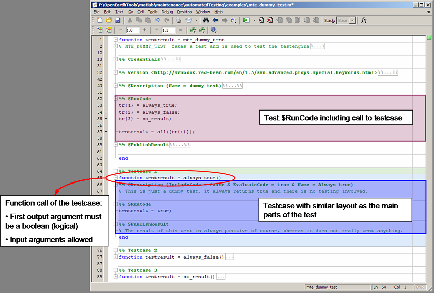

Creating tests
Like functions OpenEarthTools also contains a function to automatically generate a new test (oetnewtest). The help of this function shows you how it can be used.
There are several ways to call oetnewtest:
- Without input arguments
- With the name of the test function
- with the name of the function that is tested by the new testfunction
- For the file currently edited in the matlab editor
The help of oetnewtest provides more information on the options that can be specified for oetnewfun.
help oetnewtest
OETNEWTEST Create a new test file given the file or function name
Routine to create a new test including Credits and svn keywords.
Company, address, email and author are obtained using from the
application data with getlocalsettings. If there is already a
testdefinition with the same name, the function asks whether to
open the existing file, copy the most important code pieces into
a new template, or start from scratch with the same name.
Syntax:
oetnewtest('filename');
oetnewtest('currentfile');
oetnewtest('functionname');
oetnewfun(..., 'PropertyName', PropertyValue,...)
Input:
'filename' - name of the test file (this should end with
"_test.m" otherwise it is treated as a function
name. If the filename is not specified, an Untitled
test will be generated.
'currentfile' - Looks up the last selected file in the matlab editor
and creates a test for that function.
'functionname'- Name of the function for which this file should
provide a test.
PropertyNames:
'h1line' - One line description
'description' - Detailed description of the test
'testname' - An alternate name for the test
'testcases' - Cell array of strings with names of the testcases
you want to create.
Example:
oetnewtest('oetnewtest_test',...
'testcases', {'Case 1','Case 2','Case 3'});
oetnewtest
See also: oetnewfun, getlocalsettings, load_template
Simple test
For the sake of simplicity the most simple test is just a function that returns a testresult. The function must obay the following rules:
- The function name should contain "_test".
- The function should be addressed without any input parameters
- The first output argument of the function should be a boolean (logical) indicating the result of the test {true | false | NaN}
Such a function could look like this:
% function testresult = testname_test() % % testresult = sum([2,3])==5;
Basic elements of a test
A Testdefinition can be divided into two parts:
- Function help block
- Basic parts of the test definition
Function help block
Firstly a testdefinition is a function. Following the basic function documentation described in the Matlab style guide we should include a help block in the function with a layout similar to the one provided by _oetnewfun_.

Basic parts of the test definition
Secondly (regression) tests are often accompanied by an extensive documentation. Many developers have to cope with the problem of updating / renewing the tests and at the same time keeping the documentation of these tests up to date. In an attempt to deal with this problem testdefinitions in OpenEarthTools can contain documentation of the tests and visualization of the results. This is achieved distinguishing three code blocks:
- Description of the test
- The actual code that is executed
- Documentation / visualization of the results

Description block
The description typically does not depend on the test result. This block can contain publishable code (see next section for formatting tips) to document the purpose of the test and what can be expected as outcome. This block is preceeded by a cell divider ("%% ") followed by the keyword $Description:
%% $Description
RunCode block
This block of code contains the actual test. The test engine automatically runs this block of code preceeded by the description code (so that all variables created in the description block are known) and saves the resulting workspace. Any figures created during the test will be deleted and are not included in the publication (This is no real problem, since we seperate computational functions from plot functions). During this block of code the first output argument should be created (indicating the testresult by either a boolean (false / true) or a NaN. The start of the RunCode block is indicated with a cell divider similar to the one to indicate the Description, but now with the keyword $RunCode:
%% $RunCode
This cell divider automatically defines the end of the preceeding block of code ($Description or $PublishResult).
PublishResult block
This block of code (ending at the end of the file in case no testcases are defined, or at the last "end" keyword prior to a testcase) contains publishable code to visualize the test result. Typically this can contain some plots of the result in case of a regression test to visually inspect the result. The following section explaines more about the publication blocks. The start of the PublishResult block is indicated with:
%% $PublishResult
Formatting the publishable elements of a test
There are two publishable elements in a test definition (description and publishresult blocks). Publication of these parts to html is done with the matlab function "publish". A lot of information on formatting the output html pages can be found in the matlab documentation.
Block attributes
Each publishable block in the testdefinition (see previous section of this document) can contain atributes in its header. The attributes determine publish options of the specific block, test or testcase. The following table gives an overview of the possible attributes that can be defined for the $Description and $PublishResult code blocks.
| Attribute Name | Class | Description |
|---|---|---|
| Name | char Default='' | Custom name of the test or testcase. |
| IncludeCode | logical Default=false | Determines the publish option showCode for this publishable section. |
| EvaluateCode | logical Default=true | Determines the publish option evalCode for this publishable section. |
Attributes can be added between brackets after the dedicated keyword that defines the function of the cell in particular:
%% $Description (Name = Tutorial Name)
Attributes can be seperated by the "&" sign.
%% $Description (Name = Tutorial Name & IncludeCode = true)
Formatting of cells for publishing
The matlab help documentation contains a lot of information on formatting comments or code for publishing with the publish function. It is for example possible to include equations, force a snapshot or include a prerendered image. The matlab editor also contains a menu item with all of these functionalities:

Working with testcases
The test definition allows for the use of testcases. One test can contain an unlimited amount of testcases. Typically one uses testcases to test different functionalities of the same applicaion or engine to avoid including multiple testdefinitions for one function. A testcase can be defined by including a subfunction that is addressed in the RunCode block. It is important to know that:
- It should be subfunctions, not nested functions (in other words, the main function should be terminated with an "end" keyword before declaration of the subfunction / testcase.
- A testcase can have input arguments (generated in the Description or RunCode part of the test)
- A testcase can have multiple output arguments.
- The first output argument should be of type boolean (logical), indicating whether the testcase was successfull.
- A testcase is also a function and therefore its name cannot interfere with other functionsnames
The following image shows an example of a testcase declaration.

Examples
The following files contain examples of how te use the testdefinition to obtain the desired result: